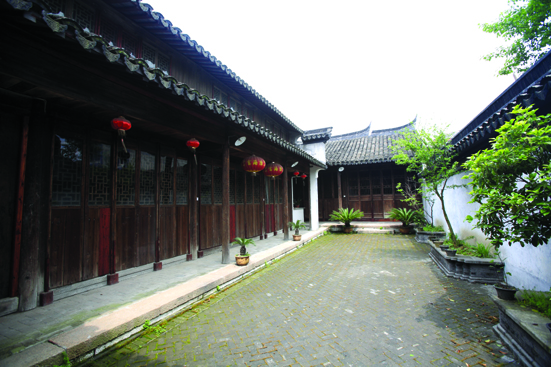

嘉兴市文物保护网 · 市级文物保护单位 · 2014-06-18 · 原文

龚宝铨(1883～1922)，嘉兴人，近代资产阶级革命家，为光复会的重要领导人之一，先后介绍章太炎、徐锡麟等人入会。曾担任过浙江图书馆馆长、都督府外交顾问等职。其故居位于油车港镇宝铨路41号，清代建筑，砖木结构，由坐西朝东二层楼房和坐北朝南平房组成，建筑面积356平方米。2009年，故居公布为市级文物保护单位。2011年，故居完成修缮布展对外免费开放。